This post continues on our study of how to create your very own DIY (Do It Yourself) dimensional portal for world-line travel. This is part six. In this post, we will discuss the generation of the magnetic field that is critical to the operation of the entire mechanism. We will look at the aspects involved and how it works.
Roadmap
Here is a brief summary of our efforts so far…
- Introduction.
- Gravity separation and isolation.
- Measurement of the gravitational frequencies.
- Alan Holt Teleportation mechanism.
- The coordinate mapping mechanism.
And now this post…
The Magnetic Field Generator
A magnetic field is a vector field that describes the magnetic influence of electric charges in relative motion and magnetized materials. A charge that is moving parallel to a current of other charges experiences a force perpendicular to its own velocity. The effects of magnetic fields are commonly seen in permanent magnets, which pull on magnetic materials (such as iron) and attract or repel other magnets. -Wikipedia
The creation of a magnetic field is a very mature technology. If you are lucky, you can probably purchase some large surplus magnetic field generators from the United States government, or you can have some custom made at a reasonable cost. This component of the dimensional portal might not be the most complicated item of equipment, but it will certainly be the most expensive on your “bill of materials” for the project.
- Surplus power transformers (Australia)
- Surplus Transformers – Salvage – For Sale
- Used, Surplus & New Transformers For Sale
- Surplus Transformers – Mainline Electronics Ltd
In any event, you will want something that can create a large magnetic field that a person can walk into. It must be able to create a portal at least seven feet high, and three feet wide at the minimum.
Having this piece of equipment custom made is not hard to do, but you will need to be able to speak the language of the engineers and the designers at the factory or warehouse. So here are some of the basic terms that you will need to acquaint yourself with…
Maxwell’s Equations – The equations behind major modern electromagnetism
Maxwell's equations are a set of coupled partial differential equations that, together with the Lorentz force law, form the foundation of classical electromagnetism, classical optics, and electric circuits. The equations provide a mathematical model for electric, optical, and radio technologies, such as power generation, electric motors, wireless communication, lenses, radar etc. They describe how electric and magnetic fields are generated by charges, currents, and changes of the fields. The equations are named after the physicist and mathematician James Clerk Maxwell, who, between 1861 and 1862, published an early form of the equations that included the Lorentz force law. Maxwell first used the equations to propose that light is an electromagnetic phenomenon. -Wikipedia
Maxwell’s set of four equations forming the basis for electromagnetism are as important as Newton’s laws in mechanics. Maxwell’s equations are applied in almost all modern technologies. The equations provide a mathematical model for electric, optical, and radio technologies, such as power generation, electric motors, wireless communication, lenses, radar, etc. Firstly let us see these four sweet equations one by one and then discuss them as a whole.
1. Gauss’ Law or Maxwell’s first equation
The following equations are licensed. (no shit! Can you fucking believe it? That's God damn America for you. Everything for a price. Tons of little hands in your pockets.) You can read about this license here.
Maxwell’s first equation, which describes the electrostatic field, is derived immediately from Gauss’s theorem, which in turn is a consequence of Coulomb’s inverse square law. Gauss’s theorem states that the surface integral of the electrostatic field DD over a closed surface is equal to the charge enclosed by that surface. That is
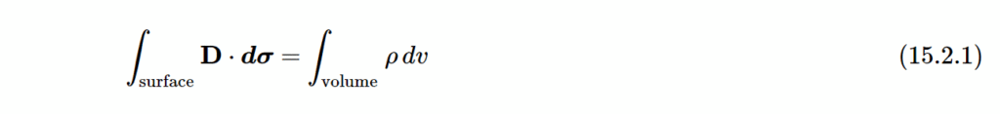
Here ρρ is the charge per unit volume.
But the surface integral of a vector field over a closed surface is equal to the volume integral of its divergence, and therefore
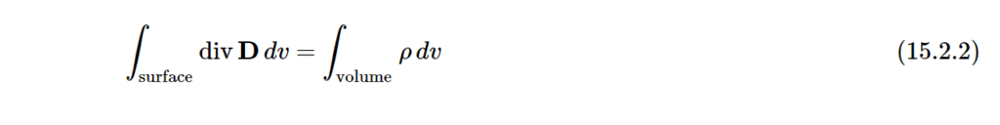
Therefore
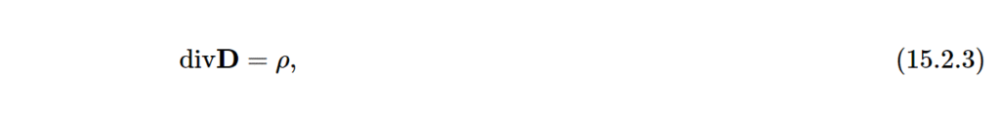
or, in the nabla notation,
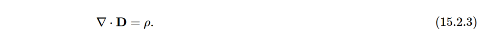
And thus we can summarize all this as…
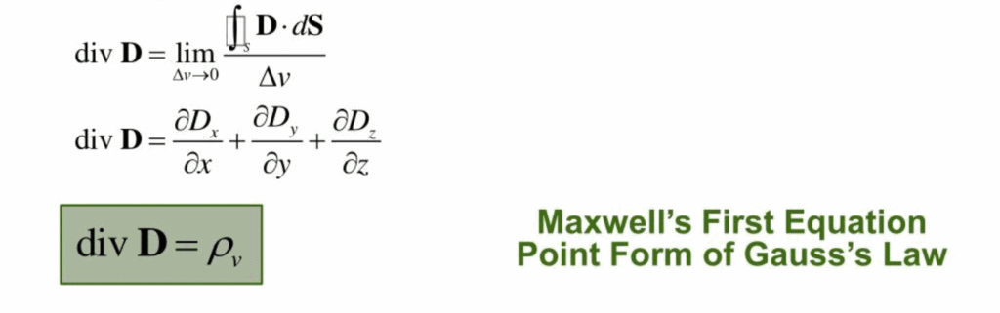
Electric charges produce an electric field. The electric flux across a closed surface is proportional to the charge enclosed.
2. Gauss’ Law for Magnetism or Maxwell’s second equation
Unlike the electrostatic field, magnetic fields have no sources or sinks, and the magnetic lines of force are closed curves. Consequently the surface integral of the magnetic field over a closed surface is zero, and therefore
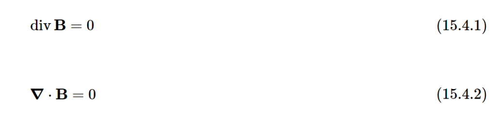
There are no magnetic monopoles. The magnetic flux-and-faradays-law-quantitative across a closed surface is zero.
3. Faraday’s Law or Maxwell’s third equation
This is derived from Ampère’s theorem, which is that the line integral of the magnetic field HH around a closed circuit is equal to the enclosed current.
Now there are two possible components to the “enclosed” current, one of which is obvious, and the other, I suppose, could also be said to be “obvious” once it has been pointed out! Let’s deal with the immediately obvious one first, and look at the figure below…
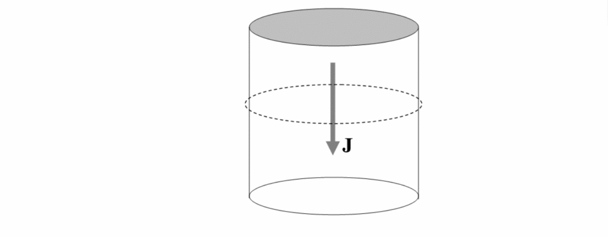
I am imagining a metal cylinder with current flowing from top to bottom – i.e. electrons flowing from bottom to top. It needn’t be a metal cylinder, though. It could just be a volume of space with a stream of protons moving from top to bottom. In any case, the current density (which may vary with distance from the axis of the cylinder) is JJ, and the total current enclosed by the dashed circle is the integral of JJ throughout the cylinder. In a more general geometry, in which JJ is not necessarily perpendicular to the area of interest, and indeed in which the area need not be planar, this would be ∫J⋅dσ∫J⋅dσ.
Now for the less obvious component to the “enclosed current”.
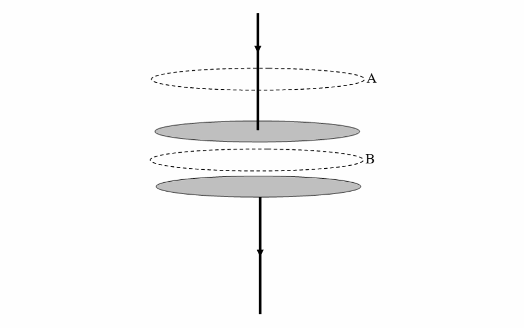
I imagine two capacitor plates in the process of being charged. There is undoubtedly a current flowing in the connecting wires. There is a magnetic field at A, and the line integral of the field around the upper dotted curve is undoubtedly equal to the enclosed current. The current is equal to the rate at which charge is being built up on the plates. Electrons are being deposited on the lower plate and are leaving the upper plate. There is also a magnetic field at B (it doesn’t suddenly stop!), and the field at BB is just the same as the field at A, which is equal to the rate at which charge is being built up on the plates. The charge on the plates (which may not be uniform, and indeed won’t be while the current is still flowing or if the plates are not infinite in extent) is equal to the integral of the charge density times the area. And the charge density on the plates, by Gauss’s theorem, is equal to the electric field DD between the plates. Thus the current is equal to the integral of D˙D˙ over the surface of the plates. Thus the line integral of HH around either of the dashed closed loops is equal to ∫D˙⋅dσ∫D˙⋅dσ.
In general, both types of current (the obvious one in which there is an obvious flow of charge, and the less obvious one, where the electric field is varying because of a real flow of charge elsewhere) contributes to the magnetic field, and so Ampère’s theorem in general must read
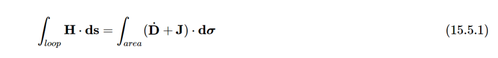
But the line integral of a vector field around a closed plane curve is equal to the surface integral of its curl, and therefore
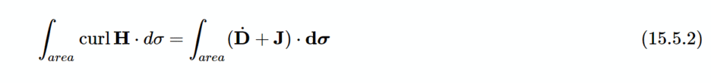
Thus we arrive at:
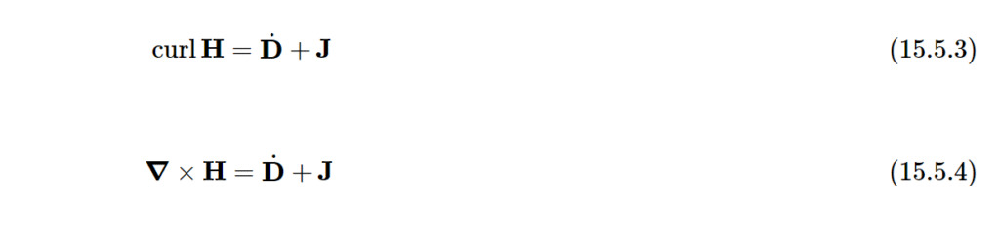
Time-varying magnetic fields produce an electric field.
4. Ampere’s Law or Maxwell’s fourth equation
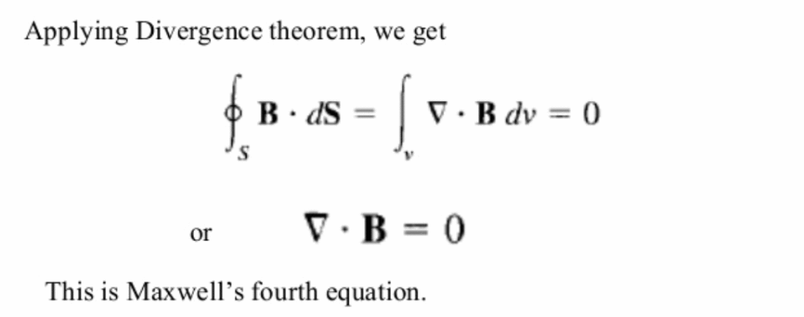
Steady currents and time-varying electric fields (the latter due to Maxwell’s correction) produce a magnetic field.
Maxwell’s Equations as a Whole
As a whole, what do Maxwell’s Equations mean?
Maxwell’s equations describe how electric and magnetic fields are generated by charges, currents, and changes of the fields. One important consequence of the equations is that they demonstrate how fluctuating electric and magnetic fields propagate at a constant speed (c) in the vacuum, the “speed of light“. These electromagnetic waves have a wide variety of usage, they are used in small things like routers to big things like search for aliens using radio telescopes and all these devices involves the use of Maxwell’s equations. Maxwell understood the connection between electromagnetic waves and light with these equations in 1861, thereby unifying the theories of electromagnetism and optics.
Now, on a practical level, seriously no one is going to sit down and create their hand-crafted magnetic field generator. Aside from it being a heck of a lot of work, it will require some specialized fabrication tools and some skill. And with something that large and costly, it would best serve the “Mad Scientist” in you to just simply compile some money and have one built to you to your specifications.
Thus, you can use these laws listed above to help you on your way.
The point that I am trying or attempting to make is that the generation of a magnetic field is not difficult it is common place and is in just about every electrical motor in the world. What is different, however is the [1] scale and [2] the utilization of it.
Generation of a magnetic field
This is pretty much how it is done…
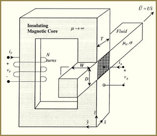
We (who have torn apart old motors, generators, and television sets) are well accustomed to seeing this kind of set up. To us, it pretty much looks like a typical transformer only scaled up in size immensely.
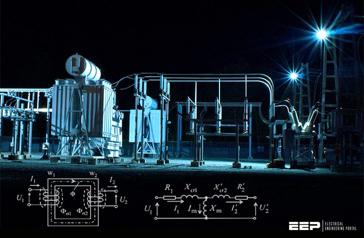
Though, given it’s purpose and requirements, it might be larger and more complex than a standard run-of-the-mill power transformer. Perhaps something along the lines of this, eh?
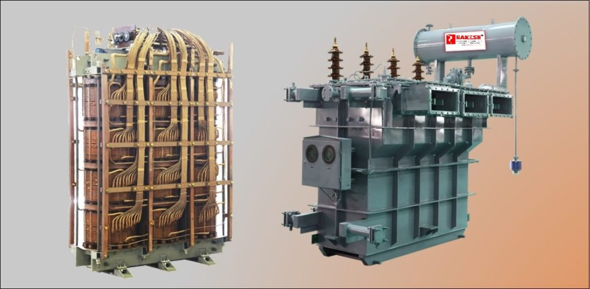
. The company is registered with SSI and has the entire infrastructure to manufacture Transformers upto 5MVA & voltage class of 11KV, 22KV, 33KV.
So, you can pretty much expect a layout something along these lines…
Magnetic field generator and the egress portal arrangement…
This is a cross-section view of how the set up would look. You would have this enormous ferrite frame that would carry the magnetic field through an air gap that a person can walk through. This field is generated through a transformer that would pull it from existing powerlines.
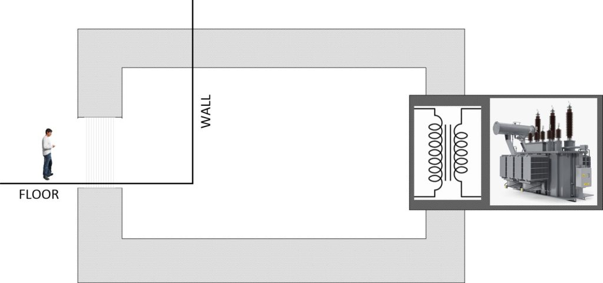
This drawing is not to scale, but it should give the reader an idea of the general size of what we are talking about here. In fact, if the ceiling covers the ferrite end of the top air-gap, the person entering the portal wouldn’t even be aware that there was a invisible door there at all. It would jsut be a floor and a wall at the end.
Sizing of the air gap
The amount of magnetic flux you can generate will be a function of the size of the ferrite core, and the air gap. In fact, all things taken into account, it will be the air gap that will pretty much establish the power and technical requirements for the mechanism.
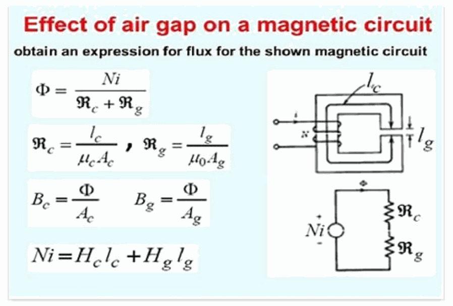
Construction notes
This is a large and expensive piece of equipment and it would be in the best interests of all involved if it is custom made by people who are experts in this kind of thing. You can find these people on the internet. You want to find companies or engineering design teams that specialize in the design of windings, transformers, chokes, ferrite components and windings. Perhaps something like these fellas…
Or, if you want to go it alone, you can access any number of resources on the internet on coil winding, and transformer design. Perhaps something along these links might be of interest…
- CHAPTER Winding your own coils
- Transformer Design & Design Parameters
- Coil design and fabrication: basic design and modifications
- Build Your Own Transformer | Electronic Design
- Electronics/Transformer Design – Wikibooks
- Transformer Basics and Transformer Principles
- Transformers, Impedance Matching and Maximum Power …
Now there are some things that you need to take into account if you go the hard (but interesting) way to DIY your very own components…
How Transformers, Chokes and Inductors Work, and Properties of Magnetics
The magnetic properties are characterized by its hysteresis loop, which is a graph of flux density versus magnetization force as shown below:
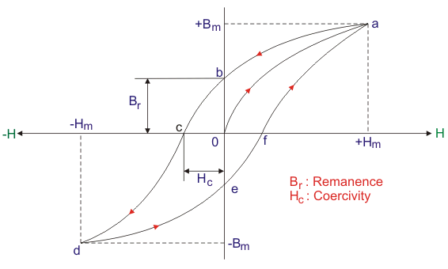
When a electric current flows through a conductor ( copper wire), it generate a magnetic field. The magnetic field is strongest at the conductor surface and weakens as its distance from the conductor surface is increased. The magnetic field is perpendicular to the direction of current flow and its direction is given by the right hand rule shown below.
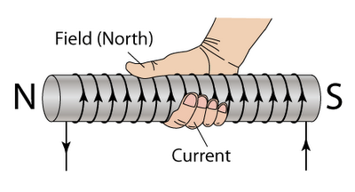
When the conductor or wire is wound around a magnetic materials ( ferrite, nanocrystalline, amorphous, iron, nickel steel, grain oriented steel, MPP, sendust, high flux, etc), and current flows through the conductor, a flux is induced on the magnetic materials. This flux is induced by the magnetic field generated by the current carrying conductor. The magnetic material’s atomic parts got influenced by the magnetic field and causes them to align in a certain direction.
The application of this magnetic field on the magnetic materials is called magnetization force.
Magnetization force is called Oersted or A/m (amperes per meter)or A/cm.
The units for Magnetization force is “H”.
The results of applying these magnetic field from the current carrying conductor causes the magnetic materials to have magnetic flux being formed inside the magnetic materials. The intensity of these flux is called flux density. Therefore flux density is defined as the flux per square area.
Flux density is called gauss or Tesla. I Tesla is10,000 gauss, or 1mT is 10 gauss.
The unit for Flux is “B”.
Thus, the hysterisis loop is often called the BH curve. Understanding of the BH curve is extremely important in the designs of transformers, chokes, coils and inductors.
For a square wave application as in SMPS (square wave), the Flux density or B in Gauss is given as:
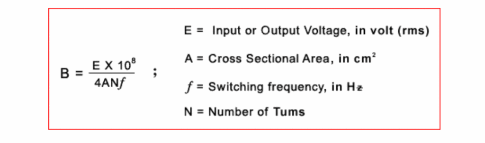
Note that B is a function of voltage ( input voltage if calculated from primary windings, and output voltage if calculated from secondary side). For square wave, the constant in the above formula is 4.0, and for sinewave, it is 4.44. Flux will reduce if you increase the number of turns, increase the switching frequency or increasing the size of the cores ( increasing the area).
The magnetization force or H in Oersted is given as:
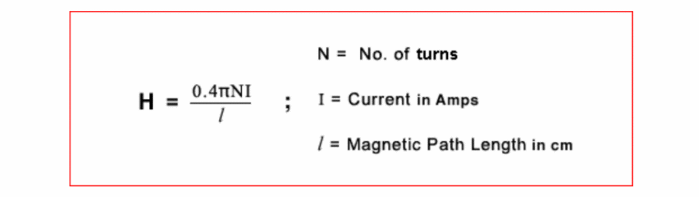
Note that H is a function of input current. The unit for H in the above formula is in Oersted. The conversion from Oersted to A/m or A/cm is one Oersted = 1.2566 A/cm. As the current swings from positive to negative the flux changes as well, tracing the curve.
The permeability of a magnetic material is the ability of the material to increase the flux intensity or flux density within the material when an electric current flows through a conductor wrapped around the magnetic materials providing the magnetization force.
The higher the permeability, the higher the flux density from a given magnetization force.
If you look at the BH loop again, you will note that the permeability is actually the slope of the BH curve.
The steeper the curve, the higher the permeability as shown below.
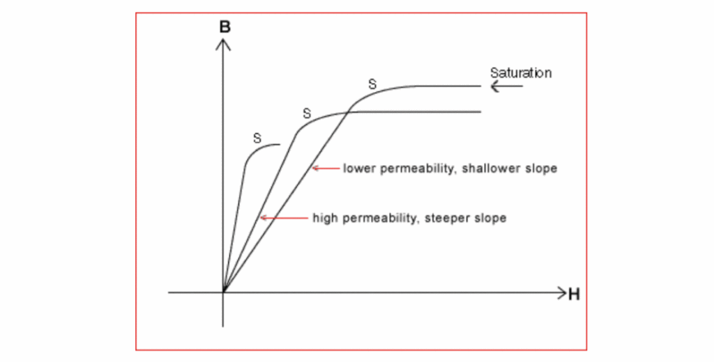
As the magnetization force increases ( or the current over the conductor is increased), a point is reached where the magnetic material or core will saturate. See point “S” above on the curves. When that happens, any further increase in H, will not increase the flux. More importantly, the permeability goes to zero as the slope now is flat. In this situation the magnetic material or core will fail to work as a transformer, chokes, or inductors.
So, it is very important in a choke or inductor design, not to drive the core into saturation by increasing the current (AC or DC). Usually it is the DC current that saturate the cores since it is a constant current, and puts the cores to a certain flux level.
In a transformer design, you must make sure that the maximum AC current swings from positive to negative is well below the saturation point.
Another way to get saturation is by increasing the flux density which is normally achieved by increasing the voltage ( see equation above).
From the BH curve, you can see that when the permeability is high ( slope is steep), the cores will go into saturation faster. Conversely, when the permeability is low, the cores saturate at a much higher flux density.
Power ferrite cores normally have a permeability of about 2000, and they saturate faster than iron powder or MPP cores where the permeability of Iron Powder or MPP core is 125 or so.
The typical saturation flux density of Power Ferrite material is under 4000 gauss (400mT). Whereas the saturation flux density of MPP material is 7000 gauss. High Flux is 15,000 gauss and Iron Powder is 10,000 gauss.
A transformer is an energy transfer device, so you want to have minimum losses when you transfer energy from primary side to secondary side. This is why a ferrite cores is used.
In a choke or inductor design, the application is for energy storage, and there is always a DC current flowing through, so you want to use a iron powder, MPP, sendust or high flux cores. Also, the saturation flux is a lot higher, so a higher DC current can flow through.
Core Losses
There are always energy losses in transformers and chokes. These energy losses will generate heat and cause thermal problems. The losses in a transformer, chokes or inductors are from the following sources:
- Hysteresis loss from the sweeping of flux from positive to negative and the area enclosed by the loop is the loss. Hysteresis loss is due to the materials intrinsic properties due to the energy used to align and re-align the magnetic domains. You can lower this loss by using a more expansive materials such as TDK PC 44, for example.
- Eddy current loss from the circulating currents within the magnetic materials due to differential in flux voltage inside the cores itself. This loss is high dependent upon the thickness of the walls of the cores. The higher the switching frequency, the higher will be this eddy current loss.
- Copper or winding loss. This is also dependent on the wire size, switching frequency, etc. Skin effect and proximity effect will contribute to this loss.
Conclusion
This was a collection of thoughts related to the construction for the magnetic flux generator for the dimensional portal egress station. I recommend that a rent-a-engineer be utilized to design up the system, and then you all can make it from bits and pieces of scrap stock materials.
I have much more to say about this project, and I will actually say much more. I think it’s time, however, to give this particular post a break. It’s time for me to let my hair down and have some fun.
Please stand by…